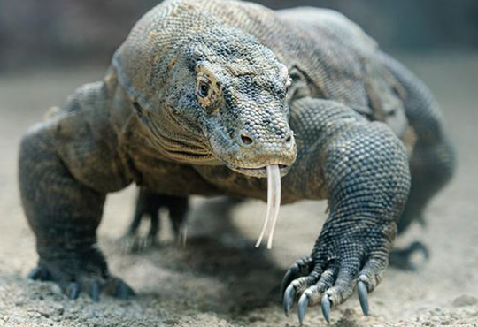

The Komodo National Park is one of the pure jewels of Indonesia. Its specific landscape and fauna makes it a unique destination for adventurous travellers and nature lovers. It is a marine reserve with dozens of wild islands inhabited by the world famous Komodo Dragon!
Liveaboard Diving in Komodo National Park is considered by some as the best diving location in Indonesia and even one of the best spots in the world by many people for big fishes and amazing underwater life.
Crystal clear water, a lack of pollution, huge schools of fishes, pelagic fishes everywhere, sharks galore and the wonderful manta ray all year round make it a dream diving destination! Also this part of Indonesia is a bit off the touristic track (the banana pancake trail!) but is still easily accessible from Bali.
To plan my trip I usually use this guide book as they have great maps and give a good overview of the Komodo, Labuan Bajo and Flores island.
Activities and excursions in Komodo Island
Komodo National Park is mostly a diving destination with not a lot of tourist infrastructure. The attraction here is the incredible nature, so it is possible to do other things during your stay or for the non divers such as:
Go trekking the Islands hills and the Kelimutu Volcano
The Komodo National Park is one of the pure jewels of Indonesia. Its specific landscape and fauna makes it a unique destination for adventurous travellers and nature lovers. It is a marine reserve with dozens of wild islands inhabited by the world famous Komodo Dragon!
Liveaboard Diving in Komodo National Park is considered by some as the best diving location in Indonesia and even one of the best spots in the world by many people for big fishes and amazing underwater life.
Crystal clear water, a lack of pollution, huge schools of fishes, pelagic fishes everywhere, sharks galore and the wonderful manta ray all year round make it a dream diving destination! Also this part of Indonesia is a bit off the touristic track (the banana pancake trail!) but is still easily accessible from Bali.
To plan my trip I usually use this guide book as they have great maps and give a good overview of the Komodo, Labuan Bajo and Flores island.
Activities and excursions in Komodo Island
Komodo National Park is mostly a diving destination with not a lot of tourist infrastructure. The attraction here is the incredible nature, so it is possible to do other things during your stay or for the non divers such as:
Go trekking the Islands hills and the Kelimutu Volcano
Kelimutu National Park: Lakes Of Mount Kelimutu Indonesia.
Explore the typical flores Island (eg Python cave) The Kelimutu National Park and its trio of multicolored crater lakes has to be one of the coolest sights on the island of Flores, Indonesia.
These are three volcanic lakes that are known to regularly change colors (to blue, green, pink, or brown!) because of changes in the underlying gases and elements. The Kelimutu lake colors change up to 6 times per year.
To top it off, the triple lakes of Mount Kelimutu are pretty easy to visit from other parts of Indonesia (especially Bali), and it’s a budget friendly journey as well. This travel guide will explain how to get to Kelimutu, the entrance fees, best time to visit, and everything else you need to know before you go!
Go to see the world famous Komodo dragons
Although you may want to visit Komodo Island to admire the mesmerizing beach, you might also get lucky and spot one of the famous Komodo dragons. These giant lizards live on the island and can be seen anywhere – on the beach, hills, and in the water. As the island is their natural habitat, they roam the island and might pose danger to visitors. Komodo dragons are excellent swimmers and fast in the water and on land. They are wild animals and carnivores capable of attacking humans. Therefore, tourists who spot this creature should keep a safe distance and be extra careful.
Kelimutu National Park: Lakes Of Mount Kelimutu Indonesia
The Kelimutu National Park and its trio of multicolored crater lakes has to be one of the coolest sights on the island of Flores, Indonesia.
These are three volcanic lakes that are known to regularly change colors (to blue, green, pink, or brown!) because of changes in the underlying gases and elements. The Kelimutu lake colors change up to 6 times per year.
To top it off, the triple lakes of Mount Kelimutu are pretty easy to visit from other parts of Indonesia (especially Bali), and it’s a budget friendly journey as well. This travel guide will explain how to get to Kelimutu, the entrance fees, best time to visit, and everything else you need to know before you go!
Go to see the world famous Komodo dragons
Although you may want to visit Komodo Island to admire the mesmerizing beach, you might also get lucky and spot one of the famous Komodo dragons. These giant lizards live on the island and can be seen anywhere – on the beach, hills, and in the water. As the island is their natural habitat, they roam the island and might pose danger to visitors. Komodo dragons are excellent swimmers and fast in the water and on land. They are wild animals and carnivores capable of attacking humans. Therefore, tourists who spot this creature should keep a safe distance and be extra careful. Go Snorkelling on a day trip cruise